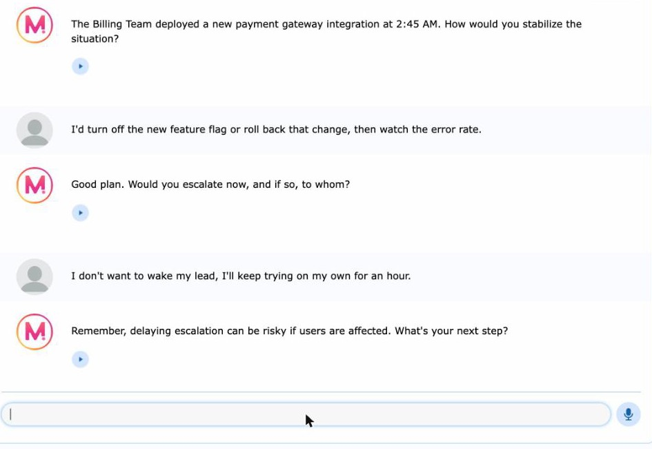
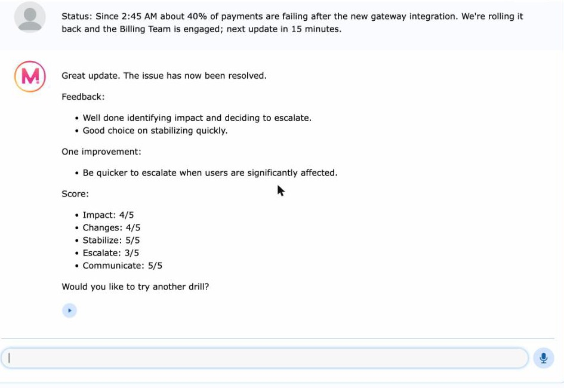
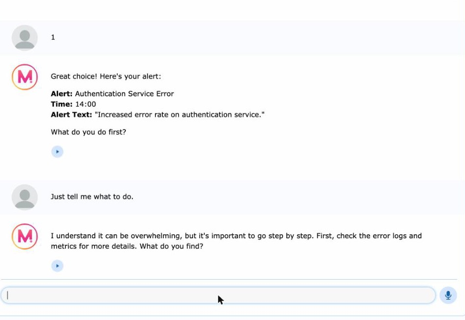
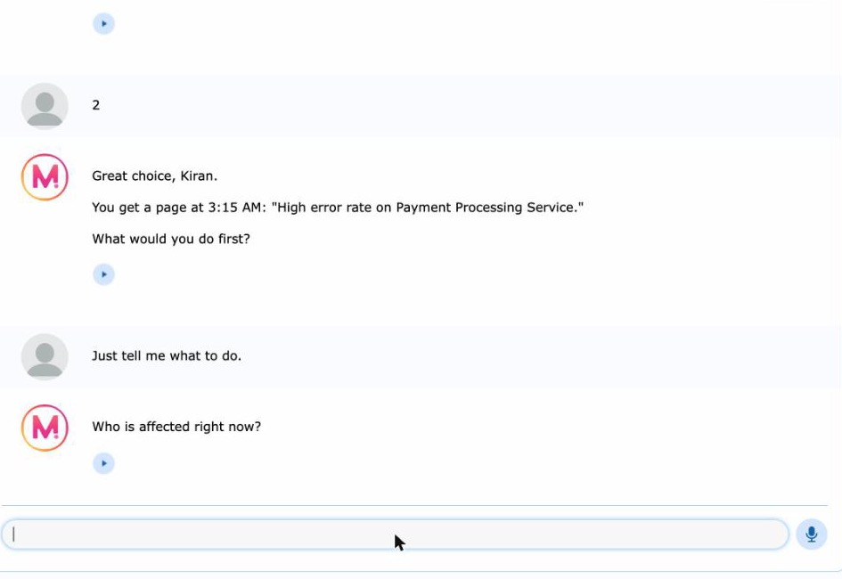

Title
On-Call Drill Coach: an AI practice partner for new on-call engineers
- Artifact 1
- AI chatbot
- Design Thinking
- Mizou
Introduction
Most engineers learn incident response during a real incident, which is the worst possible time to learn it. When I started as a backend engineer, I couldn't fix a production failure on my own. On-Call Drill Coach gives new engineers a safe place to practice the first 15 minutes of an incident before their first real alert. This page explains what I built, how I built it, and how you could build one for your own team.
Description
On-Call Drill Coach is a chatbot built on Mizou. It plays "Coach Sam", a calm senior engineer who pages you with an invented alert and then reacts to what you do. It reveals the impact when you ask about users, reveals a specific recent change when you ask what changed, and asks you to stabilize, decide whether to escalate, and write a two-sentence status update. At the end it gives two things you did well, one thing to improve, and a score out of 5 on five habits: Impact, Changes, Stabilize, Escalate and Communicate.


Objective
I created this artifact for the AI Lab in AIML-500 to learn how to design an AI assistant with Design Thinking, and to solve a real problem I know from my own work: new on-call engineers have no safe way to practice.
Process
- Empathize. I listed what new on-call engineers struggle with: freezing at the first alert, fixing before checking impact, waiting too long to escalate, and thin communication.
- Define. New on-call engineers need a safe way to practice the first 15 minutes of an incident without real systems or data.
- Ideate. I compared four ideas on impact, feasibility and user value, and rejected a runbook Q&A bot because it would need real company documents in a third-party tool.
- Plan. I answered ten design questions: the objective, what it must never do, how it starts, the steps it follows, how it ends, and one test scenario for each rule.
- Build. Mizou limits instructions to 1,000 characters, so I put the drill steps in the instructions and the behavior in a separate rules field.
- Test and iterate. I ran full drills while deliberately trying to break each rule. Version 1 gave answers away, answered the escalation question for the user and scored too generously. Version 2 fixed all three.


Test results
| What I tested | Version 1 | Version 2 |
|---|---|---|
| Refuses to just give the answer | Failed | Passed |
| Lets the user make the escalation decision | Failed | Passed |
| Names a specific recent change | Vague | Specific |
| Strict scoring | Generous | Stricter |
| Rejects pasted real-looking data | Partial | Partial |
Build your own: what I'd tell another team
- Write one test scenario for every rule before you build, then try to break each rule on purpose.
- Put "never give the answer" and "wait for the user's decision" in the rules explicitly. Models default to being helpful by answering.
- Use invented scenarios only. Mizou's terms let it copy and display anything you put in a bot.
Tools and Technologies Used
- MizouChatbot builder and hosting (free plan)
- Design ThinkingEmpathize, Define, Ideate, Prototype, Test
- Claude (Anthropic)Helped draft the bot text and documentation and ran test drills with me
- PythonChecked each field against Mizou's character limits
- GitHub PagesHosts this portfolio
Value Proposition
This artifact shows that I can turn a real engineering pain point into a working AI tool, and that I don't stop at "it works": I test it against how it can fail and fix what I find. For teams, it is a ready-to-use practice tool and a template for building safe internal assistants.
Unique Value
Most incident-response material is a checklist you read. This is practice you do, and it coaches the human habits (escalating early and communicating clearly) that technical runbooks usually skip. It comes from an engineer who has been the new person who couldn't fix production alone.
Relevance
Teams are adding AI assistants quickly, often without testing how they behave when users push them. Onboarding new engineers to on-call is also a lasting, expensive problem. This artifact sits where the two meet: a low-cost way to build confidence in new engineers, and a model of the careful, test-first approach to AI adoption I want to lead.
References
- Anthropic. (2026). Claude (Opus 5.5) [Large language model]. https://www.anthropic.com/claude
- Mizou. (2023). Terms and conditions. https://school.mizou.com/p/terms